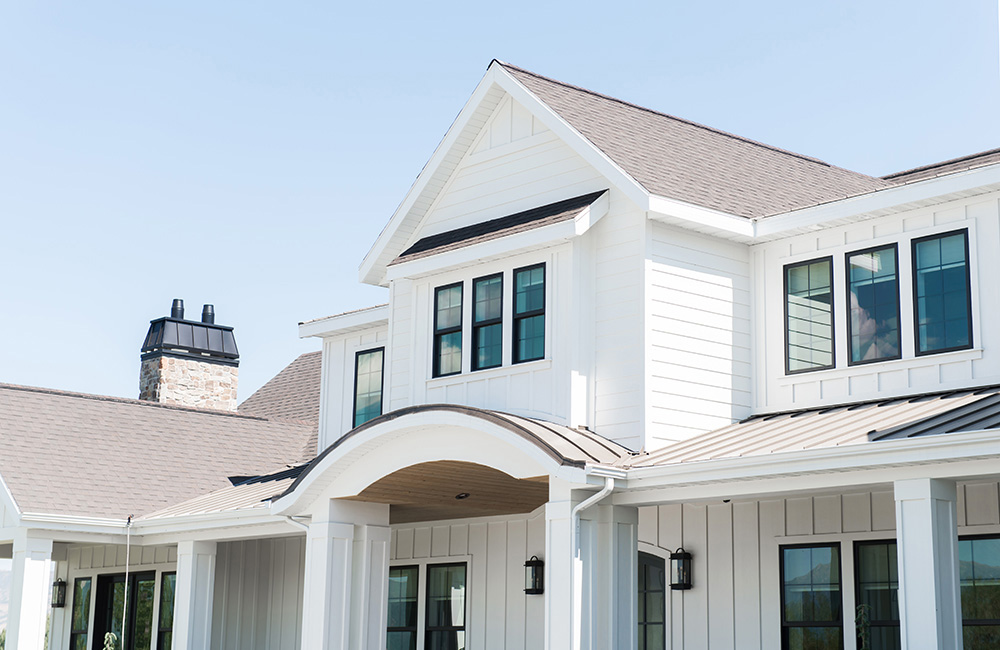
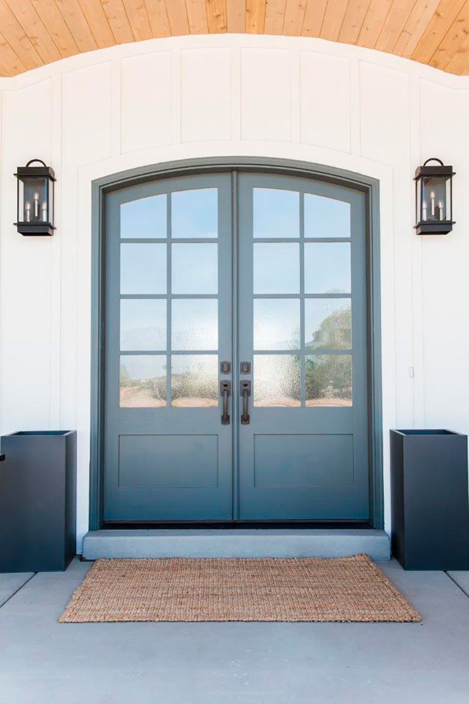

TRADITIONAL HOUSE
LA TRADITIONAL HOUSE
Pour une grande famille, on a conçu un aménagement unique sur deux étages, incluant un garage, une salle d’entrainement et une vaste cuisine pour de grandes réceptions. Une attention particulière a été portée à la fenestration pour maximiser l’apport de lumière naturelle et pour accroitre les vues sur le panorama extérieur.
De plus, nous avons prévu l’aménagement d’une cuisine extérieure, communicante avec l’intérieur, sous le porte-à-faux de l’étage, pour permettre à la famille d’utiliser le barbecue à l’année, même durant les intempéries de la température canadienne.